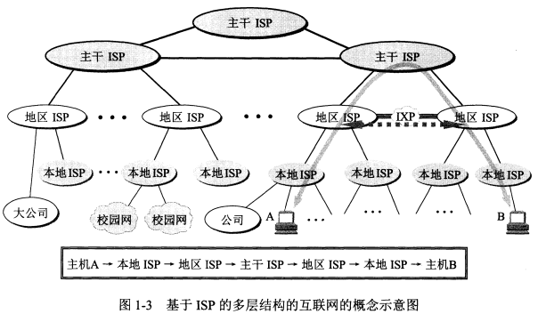

--
ch1 概述
--

互联网服务提供商ISP，由ISP提供的接入网只是起到让用户能够与因特网连接的桥梁作用。
互联网交换点IXP


边缘部分
C/S方式：本质上是客户端（请求方）和服务端（服务提供方）上两个应用进程的通信，
客户端特点：必须知道服务器的地址。
服务端特点：能同时处理多个请求，启动后不断允许，被动等待请求。需要强大的硬件和高级的操纵系统。
对等连接方式：不区分服务请求方和提供方，即客户端即使客户端也是服务端。
核心部分
路由器是实现分组交换的关键构件，其任务是转发收到的分组。


缺点：分组在各路由器分发时存在时延，分组时必须携带控制信息，存在开销，整个分组交换网需要专门的管理和控制机制。
常用的性能指标
1. 速率
在计算机网络中速率指的是数据的传输速率，即每秒传输的比特数量，它也称为数据率或比特率。速率是计算机网络中最重要的一个性能指标，速率的单位是bit/s，有时候也写为b/s或者bps。
2. 带宽（其实就是能够达到的最高速率）
在计算机网络中，带宽用来表示网络的通信线路传输数据的能力，即在单位时间内网络中通信线路所能传输的最高速率，由此可知，带宽的单位就是速率的单位bit/s，即比特每秒。

从上图来看，该网卡的带宽是100Mb，即每秒最高能传输100Mb的数据量，注意：这里是以Mb为单位来算的。
但是在平时生活中，我们所说的带宽是以MB为单位来算的，如果把100Mb以MB为单位换算理论上是可以达到12.5MB，但实际上可能也就10MB左右。
3. 吞吐量
吞吐量表示在单位时间内通过某个网络或接口的实际的数据量，包括全部的上传和下载的流量。

图2-吞吐量
一般吞吐量用于对某个网络的一种测量，通过测量我们可以知道实际上有多少数据能够通过该网络，显然，网络的带宽的大小或网络允许的最高速率限制会影响吞吐量。比如：对于一个1Gbit/s的以太网，其额定速率（即最高速率）是1Gbit/s，也就是说1Gbit/s是该以太网的吞吐量的最高值。因此，对于1Gbit/s的以太网，其实际的吞吐量可能也只有100Mbit/s，甚至更低，远没有达到额定速率。


体系结构

OSI有7层
应用层 能够产生网络流量并且和用户交互的应用程序（如QQ，而记事本则不是，SQL注入在这一层）
表示层 用来加密（安全） 压缩（提升传输速率）
会话层 服务和客户端建立会话。可用netstat -nb查看建立连接的情况
传输层 可靠传输建立会话，不可靠传输不建立会话
网络层 IP地址编址，选择最佳路径（控制路由）
数据链路层 输入如何封装 添加物理层地址 MAC （ADSL拨号上网）
物理层 电压 接口标准

网络排错（从物理层往应用层排查，例如从网线查起，最后查网页，再最后查是否欠费）


--
ch2 物理层
--


（视频看到物理层回顾这里）
--
ch3 数据链路层
--


CRC校验失败后，数据链路层直接丢弃数据，不做处理，应用层发消息重传.
PPP协议需要使用账号上网


--
ch4 网络层
--


A类：
地址范围：1.0.0.1-126.255.255.254 --红色为网络号字段，黑色为主机号
B类：
地址范围：128.1.0.1-191.255.255.254
C类：
地址范围：192.0.1.1-223.255.255.254
D类：
地址范围：224.0.0.1-239.255.255.254 D类地址为多播地址
E类：
是保留地址。该类IP地址的最前面为“1111”，所以地址的网络号取值于240~255之间。

回送地址：
127.x.x.x 有的资料说，它属于A类。
如127.0.0.1 等效于localhost或本机IP。 一般用于测试使用。
特殊说明
每一个字节都为0的地址（0.0.0.0）对应当前主机。
IP地址中的每一个字节都为1的IP地址（255.255.255.255）是当前子网的广播地址。
IP地址中凡是以11110开头的E类IP的地址，都保留用于将来和实验使用。
网络号的第一个8位不能全为0。
IP地址不能以127为开头，该类地址中数字127.0.0.1~127.255.255.254用于回路测试。
子网掩码的作用
网段 = ip地址 & 子网掩码 （感觉可以把网段当做局域网区分）
判断 电脑A的网段 与 电脑B的网段是否在同一网段
如果相同，则A与B直接交互
如果不同，则A的包需通过网关或叫路由器转发到另一个局域网的路由，再转发到电脑B上
分成两个网段
方式1
直接改网络字段
方式2
网络字段不变，修改子网掩码使主机字段划分两个区。


每个子网可用的最小最大的ip规律：全0全255为广播，不能分配给主机，所以可简记为头部+1，偶数的尾部-2，奇数的尾部-1
上图 A子网可用ip范围为 192.168.0.1~192.168.0.62 （0,64,128，192，255为全0和全1，不分配给计算机）
B子网可用ip范围为 192.168.0.65~192.168.0.126
C子网可用ip范围为 192.168.0.129~192.168.0.190
D子网可用ip范围为 192.168.0.193~192.168.0.254 （奇数结尾-1）
点到点划分则子网掩码为252，最后一个字节为6个1，然后只有两位可用0,1,2,3，除0,3外只有1,2可用，正好可以点对点。

不在一个网段需要通过路由器转发。那如何不通过路由让两台计算机通信呢？
答案是修改子网掩码，最后一位置0，由255.255.255.0->255.255.254.0


IP地址决定数据起点和终点。MAC地址决定数据帧下一跳哪个设备接收。


查mac地址：
ping 网关
arp -a

TTL（Time To Live）每过一个路由器-1，减到0还没传送到，则丢弃。

问题：添加路由与添加网关区别


C:\Users\q_tnt>ipconfig
Windows IP 配置
以太网适配器 以太网:
媒体状态 . . . . . . . . . . . . : 媒体已断开连接
连接特定的 DNS 后缀 . . . . . . . :
无线局域网适配器 WLAN:
媒体状态 . . . . . . . . . . . . : 媒体已断开连接
连接特定的 DNS 后缀 . . . . . . . :
无线局域网适配器 本地连接* 1:
媒体状态 . . . . . . . . . . . . : 媒体已断开连接
连接特定的 DNS 后缀 . . . . . . . :
无线局域网适配器 本地连接* 2:
媒体状态 . . . . . . . . . . . . : 媒体已断开连接
连接特定的 DNS 后缀 . . . . . . . :
以太网适配器 以太网 2:
连接特定的 DNS 后缀 . . . . . . . :
本地链接 IPv6 地址. . . . . . . . : fe80::5d9b:eb09:3c2d:faf4%18
IPv4 地址 . . . . . . . . . . . . : 192.168.0.100
子网掩码 . . . . . . . . . . . . : 255.255.255.0
默认网关. . . . . . . . . . . . . : 192.168.0.1
以太网适配器 vEthernet (Default Switch):
连接特定的 DNS 后缀 . . . . . . . :
本地链接 IPv6 地址. . . . . . . . : fe80::15e2:2f2a:ccce:9c1b%21
IPv4 地址 . . . . . . . . . . . . : 172.17.42.177
子网掩码 . . . . . . . . . . . . : 255.255.255.240
默认网关. . . . . . . . . . . . . :
C:\Users\q_tnt>
C:\Users\q_tnt>
C:\Users\q_tnt>route print
===========================================================================
接口列表
7...28 d2 44 0d 9e d7 ......Qualcomm Atheros AR8161 PCI-E Gigabit Ethernet Controller (NDIS 6.30)
16...1c 3e 84 82 50 d4 ......Broadcom 802.11n 网络适配器
11...1e 3e 84 82 50 d4 ......Microsoft Wi-Fi Direct Virtual Adapter
6...1e 3e 84 82 58 d4 ......Microsoft Wi-Fi Direct Virtual Adapter #2
18...00 a0 c6 00 00 00 ......Remote NDIS based Internet Sharing Device
1...........................Software Loopback Interface 1
21...4e 15 c5 75 07 f0 ......Hyper-V Virtual Ethernet Adapter
===========================================================================
IPv4 路由表
===========================================================================
活动路由:
网络目标 网络掩码 网关 接口 跃点数
0.0.0.0 0.0.0.0 192.168.0.1 192.168.0.100 75
127.0.0.0 255.0.0.0 在链路上 127.0.0.1 331
127.0.0.1 255.255.255.255 在链路上 127.0.0.1 331
127.255.255.255 255.255.255.255 在链路上 127.0.0.1 331
172.17.42.176 255.255.255.240 在链路上 172.17.42.177 5256
172.17.42.177 255.255.255.255 在链路上 172.17.42.177 5256
172.17.42.191 255.255.255.255 在链路上 172.17.42.177 5256
192.168.0.0 255.255.255.0 在链路上 192.168.0.100 331
192.168.0.100 255.255.255.255 在链路上 192.168.0.100 331
192.168.0.255 255.255.255.255 在链路上 192.168.0.100 331
224.0.0.0 240.0.0.0 在链路上 127.0.0.1 331
224.0.0.0 240.0.0.0 在链路上 172.17.42.177 5256
224.0.0.0 240.0.0.0 在链路上 192.168.0.100 331
255.255.255.255 255.255.255.255 在链路上 127.0.0.1 331
255.255.255.255 255.255.255.255 在链路上 172.17.42.177 5256
255.255.255.255 255.255.255.255 在链路上 192.168.0.100 331
===========================================================================
永久路由:
无
IPv6 路由表
===========================================================================
活动路由:
接口跃点数网络目标 网关
1 331 ::1/128 在链路上
21 5256 fe80::/64 在链路上
18 331 fe80::/64 在链路上
21 5256 fe80::15e2:2f2a:ccce:9c1b/128
在链路上
18 331 fe80::5d9b:eb09:3c2d:faf4/128
在链路上
1 331 ff00::/8 在链路上
21 5256 ff00::/8 在链路上
18 331 ff00::/8 在链路上
===========================================================================
永久路由:
无
C:\Users\q_tnt>pathping www.baidu.com
通过最多 30 个跃点跟踪
到 www.baidu.com [180.101.49.12] 的路由:
0 TNT-PC [192.168.0.100]
1 192.168.0.1
2 172.47.255.254
3 * * *
正在计算统计信息，已耗时 50 秒...
指向此处的源 此节点/链接
跃点 RTT 已丢失/已发送 = Pct 已丢失/已发送 = Pct 地址
0 TNT-PC [192.168.0.100]
0/ 100 = 0% |
1 0ms 0/ 100 = 0% 0/ 100 = 0% 192.168.0.1
0/ 100 = 0% |
2 23ms 0/ 100 = 0% 0/ 100 = 0% 172.47.255.254
跟踪完成。
静态路由：用户手动配置 例如使用add route命令
动态路由：自己学习


0.0.0.0，最特殊的一个ip地址，代表的是本机所有ip地址，不管你有多少个网口，多少个ip，
如果监听本机的0.0.0.0上的端口，就等于监听机器上的所有ip端口。换句话说，就是只要数
据报目的地址是你机器上的一个ip地址，那么就能被接受。这个ip相当于java中的this，代表
当前设备的IP。


--
ch5 传输层
--

TCP功能：分段、编号、流量控制、传输前建立会话 -- 可靠传输，可以使用netstat -n可查看会话
UDP：一个数据包就能完成数据通信，不建立会话
http = TCP+80
https = TCP+443
ftp = TCP+21
SMTP = TCP+25
POP3 = TCP+110
RDP = TCP+3389 远程桌面协议
共享文件夹 = TCP+445
SQL = TCP+1433
DNS = UDP+53 or TCP+53
应用层协议和服务之间的关系
服务运行后在TCP或UDP的某个端口侦听客户端请求
查看计算机侦听端口 netsta -an
windows防火墙：拦截外部访问本机电脑，本机电脑能够访问外部设备并接收返回结果


源端口和目标端口各占2个字节
序号表示每段数据的第一个数据的编号。编号是按原始数据开始编，类似索引。
确认号表示已发送的数据中最后一个数据的编号。
数据偏移告诉计算机告诉首部长度。多少个字节后是数据部分。知道哪些是首部，哪些是数据部分。偏移一位即偏移4个字节。用4位表示，最多可以偏60个字节。
选项：变长首部，相当于首部的扩充，可以用来表示支持的数据包大小


丢包时，会有SACK（选择性确认）告诉A，那一段有丢包，让其进行重传

拥塞处理方式：首先将慢开始门限设置为拥塞时的1/2，然后将拥塞窗口从1开始慢慢增加。这种方式并不能完全避免这个问题。

快重传区别于 累计确认：累计确认例如每5次确认一次，若中途有丢包，例如丢3，则需要等到5到达后才发起确认，因为丢了3，所以确认号为3，表示3,4,5需要重传。快重传是当检测到3丢失了，还没等5到达，会发三个重复的确认执行快重传算法，让其把3,4,5发过来。
两次握手足够说明链路畅通，为何需要第3次确认？
因为A若发送了两次相同的请求，前一个请求建立连接后，后一个请求再到B，B就会响应并发给A，等待A传数据。但A不需要这个请求，会扔掉。导致B一直等待，连接多的话，B可能卡死。

seq = ack
ack = seq+1

个人理解：SYN-SENT SYN-RCVD正好对应前两次的SYN=1，最后一次确认不需要这个所以为0.

--
ch6 应用层
--
DNS服务的作用：解析域名，将域名解析成IP地址。
访问网页时，计算机先发个数据包给DNS服务器,DNS服务器响应并返回ip地址给计算机，计算机通过http://ip地址+端口号访问网页。
另外一种查看域名对应ip，一个域名对应多个IP来达到负载均衡

安装自己的DNS服务器场景
解析内网自己的域名
降低到Internet的域名解析流量
域环境（必须通过DNS找到域服务器）


域名的分布式管理，每个顶级域名服务器只管顶级相关的域名


DHCP协议


自动获取地址用的就是DHCP协议。DHCP服务器可能有好几个。
获取IP过程
PC发广播给所有机器，包括DHCP服务器。DHCP收到广播会从地址池中选一个IP分配给PC，每个DHCP服务器都会发IP给PC，所以PC会发一个确认包给一台DHCP服务器。未被选中的服务器则会收回地址。选中的DHCP再下发ip、DNS、子网掩码给PC。
释放地址 ipconfig /release
重新获得地址 ipconfig /renew
DHCP服务器跨网段分配IP
创建多个作用域
路由器配置ip helper address（路由器隔绝广播，所以pc发出的广播被路由拦截了，需配置它去找DHCP，DHCP响应广播发送地址给路由）

FTP
FTP服务端如果有防火墙，需要在防火墙上开20和21端口，并使用主动模式进行数据连接。
主动模式
ftp客户端告诉ftp服务器使用什么端口侦听，例如1020
ftp服务器和ftp客户端1020这个接口建立连接，服务器源端口为20

被动模式
ftp服务器随机打开一个端口，等待ftp客户端的连接


设置入站规则
（入站规则：别人电脑访问自己电脑；
出站规则：自己电脑访问别人电脑）
net user Administrator password 更改密码命令
一台服务器如何区分不同的网站：
方法1 使用不同的端口，ip相同
方法2 端口均为默认80端口，使用不同的ip
方法3 使用相同ip+端口，主机头（域名）根据网站设置，例如www.test1.com，www.test2.com。这样就不能用ip地址来访问了，因为指向了多个网站。
用域名访问网站需要配置DNS，默认按ip+端口访问网页。网页上不了，QQ能上。有可能是dns解析异常，导致网站的ip找不到，而QQ有一个ip地址在软件中，所以不需要解析直接能够访问。
WEB代理服务器
减少访问Internet的带宽
同一个网段，可以不用网关和DNS同样能够上网
通过Web代理绕过防火墙


SMTP协议
发邮件使用SMTP协议，收邮件使用的是POP3或者IMAP协议，后者更强大。
邮件由客户端A发送到服务端A，再由服务端A通过DNS服务器查询目的地服务器B地址，B服务器收到邮件后放在收件箱，最后发送给客户端B。


--
ch7 网络安全
--


加密技术
对称加密
优点：效率高
缺点：秘钥不适合在网上传输
秘钥维护麻烦
非对称加密
加密和解密秘钥不同，是一对，称为公钥和私钥。

数字签名 防止抵赖，能够检查签名之后的内容是否被更改。（学习不太透彻）


CA 证书颁发机构作用
为企业和用户颁发数字证书，确认这些企业和个人身份，发布证书吊销列表。企业和个人信任证书颁发机构。
安全套接字

HTTPS加密过程：采用对称加密（效率）+非对称加密（安全）方式进行。
应用层数据使用对称加密方式发送至传输层（对称加密的秘钥先通过非对称加密方式加密）
接收方需要先用非对称加密的方式解密获得对称加密的秘钥，在用秘钥对获取的数据进行解密。


网路层安全IPSec
数据不重要但必须确认是对方传送的，则加密形式类似签名，使用AH协议。若网络层的数据需要加密，则使用ESP。


--
ch8 Internet上的音频视频
--
在Internet上传输音频视频面临的问题
音频视频 占用的带宽高 网速恒定 延迟要低
数据信息要求没有音视频高，因为用户可能不用实时操作
延迟问题（对于交互式应用要求很高，延迟要到实时水平）
网速恒定（使用缓存技术，先缓存一段再播放，解决靠前数据包由于途径远导致没按时到达问题。代价是增加了时延）


--
ch9 无线网络
--